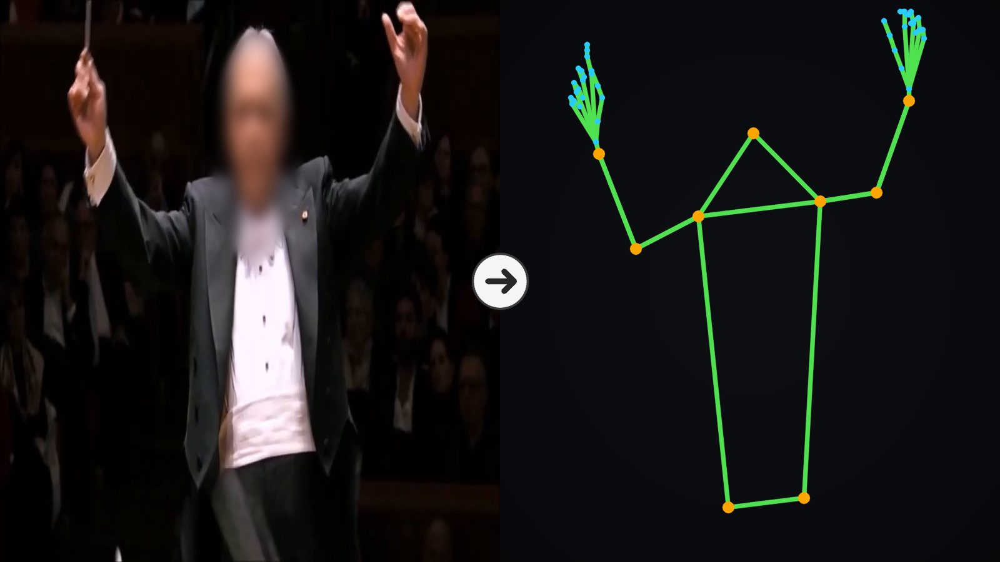

Five conductors, six decades of concert film, no pixels, no faces, no body shape — can motion alone tell us who is on the podium? A skeleton dataset and identifiability study (ISMIR 2026 LBD submission).
Dataset & code Explore the map Play the quiz
Every dot is one skeleton run (1,300 in total). Toggle the feature space: raw motion statistics look like noise — but let a small graph network learn the motion, and five conductors separate almost perfectly.
Is it just the recording era? Conductor and era are entangled in the data itself (each career occupies its own decades), so no colouring can fully separate them between clusters. The evidence lives inside each cluster: press a decade-pair button — each pair is the same conductor filmed up to 48 years apart, black-and-white film next to 4K, yet direct neighbours on the map. Colour by career stage and the clusters stay largely mixed: a shuffle test puts within-cluster mixing at 82 % of pure chance, and what little structure remains is at least partly the conductor's own style changing with age. Fine print: this map uses the released checkpoint, trained on all of these runs; the honest generalization number is 74.3 % under session-disjoint cross-validation.
Watch three seconds of skeleton — physique normalized away, face withheld — and guess. The model gets 74.3 % right (chance 21.9 %). How about you?
Row-normalized confusion over all cross-validation windows (5 seeds summed). Each row: when this conductor is on the podium, who does the model say it is?
The diagonal is per-conductor recall. The largest confusion — Dudamel called Abbado in 15.3 % of his windows — is also the honest one: both favour large, legato, full-arm gestures. Haitink and Mehta, the most economical and the most angular of the five, are rarely mistaken for anyone.
Rehearsal and off-distribution footage was excluded from training and
cross-validation by design (--ood-exclude). That makes it a small, honest
probe: the model has never seen a rehearsal — no tails, no formal podium, lots of talking and
stopping. Here is the released checkpoint's verdict on every such video, one card each.
Read this as an anecdote, not a benchmark: 44 usable runs (about five minutes of skeleton in total) across 10 videos is far too little for per-conductor statistics, which is why it stays out of the paper's tables. Bars show the model's probability for each conductor after averaging over the video's runs; the misses cluster on the videos with only seconds of footage.
In-the-wild footage leaks answers — same stage, same clothes, duplicated uploads. Every merge and exclusion below is recorded with its evidence and shipped with the dataset. Embeddings only ever propose; documents, audio, and human eyes decide.
| # | Step | How | Decided by |
|---|---|---|---|
| 1 | Clip identity review | Face-embedding gate rejects automatically (97 % precision); every acceptance judged by a human | human |
| 2 | Skeleton QC | Cut at wrist-speed / shoulder-width spikes; keep clean stretches ≥1 s; never filter by image quality (quality ≈ era) | auto |
| 3 | Segment identity audit | Full re-inspection of segments the preview never showed; 42 segments (1.9 %) where tracking jumped to a nearby musician excluded | human |
| 4 | Boundary-frame audit | Grid inspection of segment edges + margin re-experiment (no effect confirmed) | human+exp |
| 5 | Corpus exclusions | Rehearsals, multi-performance montages, edits held out | human |
| 6 | Title merge | Normalized-title similarity + opus numbers + a composer guard (never merge across explicit composers) | auto |
| 7 | Audio-correlation merge | All 8,016 within-conductor pairs, two-stage NCC + 60-s fragment voting for excerpt blind spots | auto |
| 8 | Archival research | Visually similar candidates checked against DG/Unitel catalogues, festival archives, broadcast records — per-pair sources | docs |
| 9 | Human adjudication | All 102 candidate pairs judged with evidence on screen; human verdicts overturned 15 research suggestions | human |
| 10 | Filming-cycle merge | Same orchestra + same documented year ⇒ same group (blocks similar-stage leakage) | rule |
| 11 | True-duplicate drop | Re-uploads/excerpts of one take: keep only the copy with the most usable footage (22 videos) | rule |
| 12 | Recording-level review | One card per video, all shots at a glance: keep / out-of-distribution / drop | human |